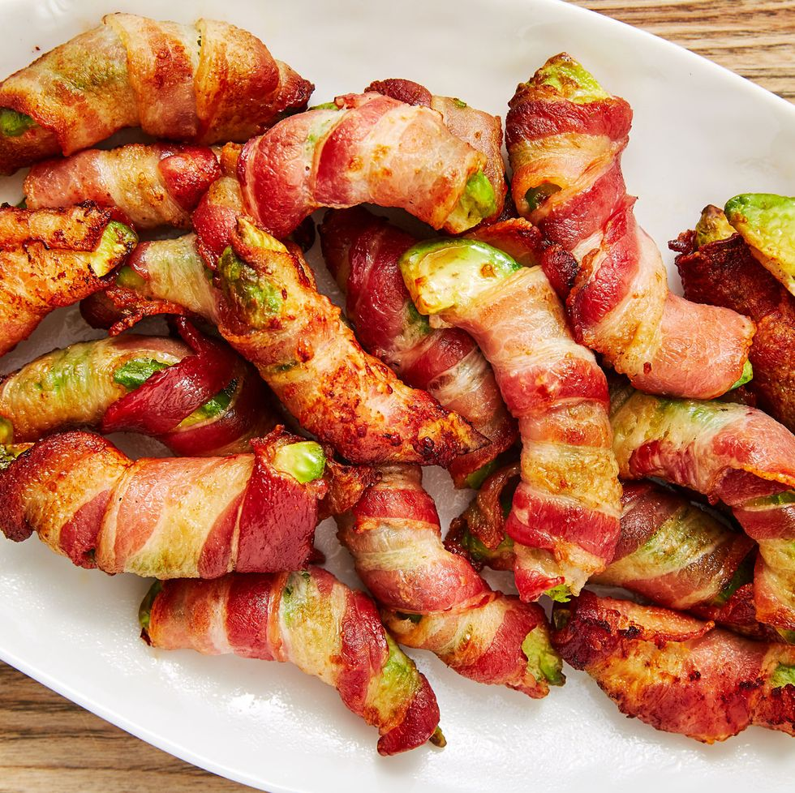
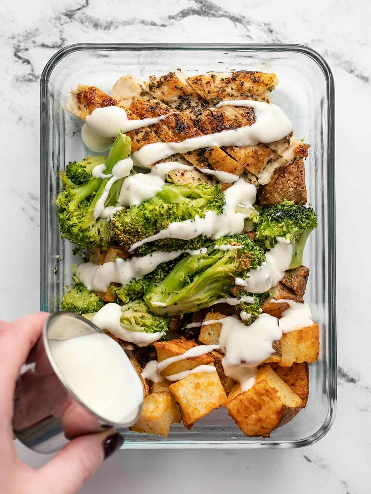

Odin's Imfamously Great Recipes
Bacon Avocado Fries

Description
Cripsy bacon with creamy avocado might be the next Bonnie & Clyde. They're criminally delicious. Such combo might help a scrawny fellow gain some weight since the two are the YingYang of fatty acids, but don't consume too many. The delicious treat are called fries for a reason. Besides, a few are enough to make you feel as though you've chewed 5 gum.
Ingredients
- Bacon
- Avocado
- Ranch Dressing
Steps: For Air Fryer
- Slice each avocado into 8 equally-sized wedges. Wrap each wedge with a strip of bacon, cutting bacon if needed.
- Working in batches, arrange in air fryer basket in a single layer. Cook at 400° for 8 minutes until bacon is cooked through and crispy.
- Serve warm with ranch.

Description
Ingredients
Steps

Description
Ingredients
Steps
Homemade Sushi

Description
Some people might shrink at the thought of eating raw sushi, but sushi lovers out would salivate. Imagine a samurai without a sword. Now imagine a sushi lover without the ability to make homemade sushi. You've imagined the same thing twice. The enjoyment of sushi at home equates to grandma doing 60mph on a 30mph speed limit.
Ingredients
- 1 1/3 cups water
- 2/3 cup uncooked short-grain white rice
- 3 tablespoons rice vinegar
- 3 tablespoons wihte sugar
- 1 1/2 teaspoons salt
- sheets nori seaweed sheets
- 1/2 pound imitation crabmeat, flaked
- 1 avocado-peeled, pitted, and sliced
- 1/2 cucumber, peeled, cut into small strips
- 2 tablespoons pickled ginger
Steps
- Preheat the oven to 300 degrees F (150 degrees C).
- Bring water to a boil in a medium pot; stir in rice. Reduce heat to medium-low, cover, and simmer until rice is tender and water has been absorbed, 20 to 25 minutes.
- Mix rice vinegar, sugar, and salt in a small bowl. Gently stir into cooked rice in the pot and set aside.
- Lay nori sheets on a baking sheet.
- Heat nori in the preheated oven until warm, 1 to 2 minutes
- Center 1 nori sheet on a bamboo sushi mat. Use wet hands to spread a thin layer of rice on top. Arrange 1/4 of the crabmeat, avocado, cucumber, and pickled ginger over rice in a line down the center. Lift one end of the mat and roll it tightly over filling to make a complete roll. Repeat with remaining ingredients.
- Use a wet, sharp knife to cut each rool into 4 to 6 slices.
Ranch Chicken Prep Meal

Description
Winners have chicken dinners, so why not prep a chicken meal for lunch? It's affordable, delicious, and nutritious. If you're in need of creating a prep meal for 3-5 days, look no further and wring that chicken's neck.
Ingredients
- 2 lbs. russet potatoes
- 1/3 cup grated Parmesan
- 1/2 tsp garlic powder
- 1/4 tsp paprika
- 3 tbsp cooking oil, divided
- 1/2 tsp salt,divided
- 1/4 tsp pepper
- 1 lb. broccoli florets
- 1 lb. boneless, skinless chicken breast
- 1 tbsp garlic herb seasoning
Steps
- Preheat the oven to 400F. Clean and dice the potatoes into 3/4" pieces
- In a small bowl, combine the Parmesan, garlic powder, paprika, and ¼ tsp salt. Place the diced potatoes in a bowl, drizzle with 1 Tbsp cooking oil and the seasoned Parmesan, then toss until evenly coated.
- Spread the potatoes out over a parchment-lined baking sheet then transfer to the oven. Roast for 30 minutes, or until golden brown and crispy, stirring once halfway through.
- Place the broccoli florets in a bowl and drizzle with 1 Tbsp cooking, and add a ¼ tsp salt and pepper. Toss until the broccoli is evenly coated.
- Spread the broccoli out onto a parchment-lined baking sheet and roast in the preheated oven for about 20 minutes, or until browned on the edges, stirring once halfway through.
- While the vegetables are roasting, prepare the chicken. Fillet the chicken breast into two thinner pieces to help them cook faster and more evenly. Season both sides of the chicken with garlic herb seasoning.
- Heat a large skillet over medium. Once hot, add 1 Tbsp cooking oil and swirl to coat the surface. Add the chicken breasts and cook for about 5-6 minutes on each side or until well browned and cooked through.
- Remove the chicken to a cutting board and let rest for five minutes. Sliced the chicken breast into strips.
- Divide the roasted potatoes, broccoli, and sliced chicken between four meal prep containers. Fill four small dressing containers with 2 Tbsp ranch dressing each. Refrigerate the meal preps until ready to eat!